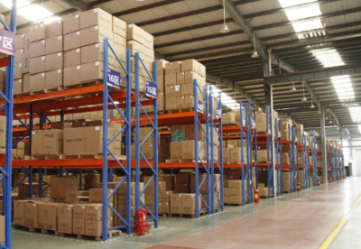
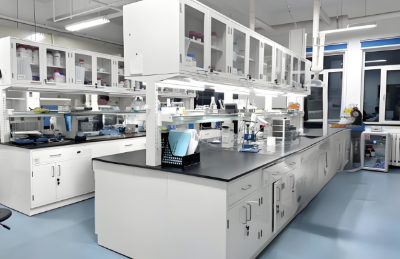

服務項目
您可信賴的化工解決方案夥伴
在 Bespring Chemical，我們不僅提供產品，更提供量身定制的服務，幫助您的業務成長。
從客製化分裝與可靠倉儲，到技術指導與市場情報，我們的團隊助您精簡流程、降低成本，並發掘新商機。我們緊密合作，確保每項方案都符合您獨特的業務需求。
聯絡我們全面服務，與您的目標相契合
我們的服務涵蓋供應鏈與業務發展的關鍵面向。無論是確保物流可靠、掌握瞬息萬變的市場動態，或解決技術挑戰，Bespring Chemical 提供實用且前瞻的支持。
- 靈活的倉儲與分裝方案，提升效率並降低成本
- 準確的市場情報，協助採購決策並預測需求變化
- 技術支援與配方指導，幫助提升產品品質與性能

倉儲與分裝
透過天津、青島、上海及寧波的合作倉庫，我們提供客製化服務，包括分裝、托盤化、貼標及自有品牌方案。 讓客戶能靈活優化物流，滿足個別需求。
市場情報
Bespring Chemical 提供即時市場洞察，包括價格趨勢、政策更新及中國市場供需分析。 客戶可依靠可靠數據，作出更明智的採購與長期規劃。

技術支援與配方指導
我們的團隊提供技術支援、配方開發及故障排除服務。 從提升產品品質到優化應用性能，我們協助客戶在其產業中創新並取得成功。